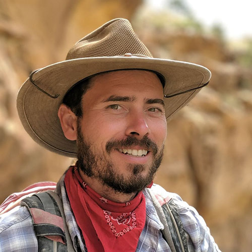

About Me
By training, I’m an archaeologist, but that’s not the only thing I am. Here are a few more labels I’m happy to embrace: pragmatist, naturalist, scientist, humanist, anthropologist, behavioral ecologist, geographer, historian, environmental data scientist, programmer, recovering philosopher, and nerd.
In case you were wondering, this is me:

The one on the left was taken on a survey in Nine Mile Canyon, Utah. That would have been the Before Times, so maybe 500 years ago. The one on the right is the same photo passed to ChatGPT with the request that it make me look like a Jim Henson muppet. When asked to provide more details, I said, “Use Bert and Ernie as inspiration.”
Current Work
Currently, I’m a One-U Responsible AI Postdoctoral Fellow at the University of Utah. My work as a fellow is narrowly focused on a specific aspect of my broader research, namely, climate adaptation in agricultural systems, particularly those related to water usage. The immediate goal is to develop an encoder-decoder hydrological model (EDHM) that can estimate soil moisture and streamflow, both of which have obvious importance to farmers. The larger ambition, though, is to contribute to the overall mission of One-U RAI - to the promotion of responsible AI - by making that modeling effort as open, as interpretable, and as accessible as possible to both scientists and community stakeholders. The hope is that it will contribute to strategic climate adaptation planning, too.
Research Interests
Broadly speaking, my research focuses on the ecology of human behavior, with a particular emphasis on spatial dynamics. Here is a list of the specific topics and questions that really animate me these days:
- Climate adaptation and migration: in very abstract terms, how do people distribute themselves across space, and how is that influenced over the long term by climate trends? For this, I usually draw on species distribution modeling approaches from ecology, including machine learning approaches like Random Forest and Maximum Entropy, though I also find my attention drawn more and more to INLA models, too.
- The micro-economics of early, early, early urbanism: like, how did we get from small, dispersed groups of mobile hunter-gatherers to large concentrations of sedentary city dwellers? I’m attracted to this problem mostly because it’s a spatial problem, but there’s also this other really weird thing about cities that I find deeply fascinating: how it is that they can exhibit such dramatic scaling effects while still failing utterly to resolve the problem of collective action.
- Demographic interpolation: how do we estimate population size without a census? There is a lot of neat work on this using remote-sensed measures of built area to interpolate modern populations across a grid, but transferring those efforts over to deep time raises an interesting problem, namely, that built area in that context is a palimpsest (like the many layers of ancient Troy), which requires that we estimate both a chronology and a population size at the same time. The current statistical approaches I find interesting for this include Gaussian and Dirichlet Process Mixture Models, as well as their deep learning analogs.
In my spare time, I contribute to several FOSS projects in the R community.
Scientific Computing and Imaging Institute
72 So. Central Campus Drive Room 3750
Salt Lake City, Utah 84112
SCI Page
- One-U Responsible AI Postdoctoral Fellow | 2025-Present
Scientific Computing and Imaging Institute
School of Environment, Society, and Sustainability
University of Utah
- Post-Doctoral Associate | 2022-2024
Center for Collaborative Synthesis in Archaeology, CU Boulder
- Assistant Director | 2018-2022
University of Utah Archaeological Center
- University of Utah | Salt Lake City, UT
PhD in Anthropology, 2022
- Northern Illinois University | DeKalb, IL
MA in Philosophy, 2009
- University of Central Arkansas | Conway, AR
BA in History and Philosophy, 2006
- Great Basin Anthropological Association | 2016-present
- Society for American Archaeology | 2014-present
- Coalition for Archaeological Synthesis | 2022-present
- European Association of Archaeologists | 2023-present